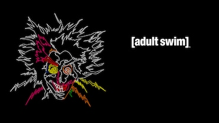

Adult Swim (estilizado como [adult swim] e frequentemente abreviado como [as]) é um bloco do canal por assinatura infantil americano Cartoon Network, que é comandado pelo estúdio de produção Williams Street Productions. É transmitido todas as noites das 21 horas até às 6 da manhã (Eastern e Pacific Time) nos Estados Unidos, destinado para o público jovem e adulto. Tendo estreado em 2001, Adult Swim serve como a identidade noturna do Cartoon Network, e foi estabelecido como uma programação alternativa durante as madrugadas, quando o público-alvo principal do Cartoon Network normalmente estaria dormindo. Em 2005, Adult Swim recebeu seu próprio relatório separado de medição de audiência do Cartoon Network por ter como alvo um público diferente. O bloco apresenta séries animadas e live-action com estilos variados, incluindo programação original, séries sindicalizadas, animes, animações de vídeo originais e curtas-metragens geralmente com mínima ou nenhuma edição de conteúdo.
O Adult Swim frequentemente exibe animações adultas, documentários, esquetes, e episódios pilotos. As séries do bloco são conhecidas por seus temas sexuais, nudez, linguagem forte, e violência gráfica. Muitos de seus programas são esteticamente experimentais, transgressivos, improvisados e surrealistas por natureza. Adult Swim tem contratos com vários estúdios conhecidos por suas produções em comédias absurdas e chocantes. Assim como o Cartoon Network, o alcance do Adult Swim através de várias operadoras de TV paga totaliza 94 milhões de lares americanos.
O Editor-chefe do Cartoon Network, Mike Lazzo, concebeu o Adult Swim. O bloco cresceu a partir das tentativas anteriores do canal em exibir conteúdo apropriado para adolescentes e jovens adultos que poderiam estar assistindo o canal após as 23h. A rede começou experimentando com sua programação de tarde da noite exibindo programas que apresentavam curtas de desenhos clássicos sem censura, tais como ToonHeads, The Bob Clampett Show, The Tex Avery Show, Late Night Black and White, e O, Canada. Outro bloco, "Midnight Run" do Toonami, exibiu a programação de ação sem censura da rede com mínimas edições. Na época, um terço da audiência do Cartoon Network eram adultos. Durante os anos 1990, a animação no horário nobre voltada para adultos começou a crescer popularmente devido ao sucesso da série popular da Fox, Os Simpsons. Foi seguido por uma tendência de outros programas de animação voltados para esse público ao longo da década, bem como séries de animação voltadas para o geral que conquistaram muitos seguidores adultos. Space Ghost Coast to Coast, a primeira incursão do Cartoon Network para programação original, foi criado em 1994 especificamente para audiências adultas de tarde da noite. A série foi criada pela Ghost Planet Industries de Mike Lazzo, qual eventualmente se tornou Williams Street Studios, os eventuais produtores e programadores do Adult Swim.